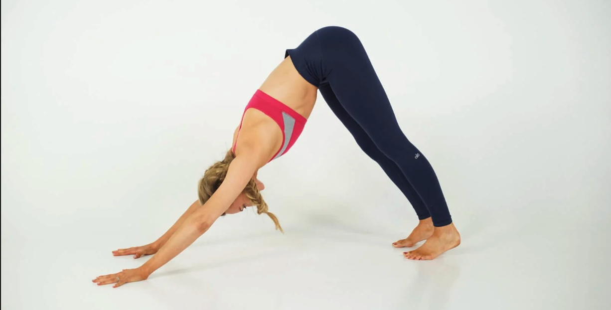
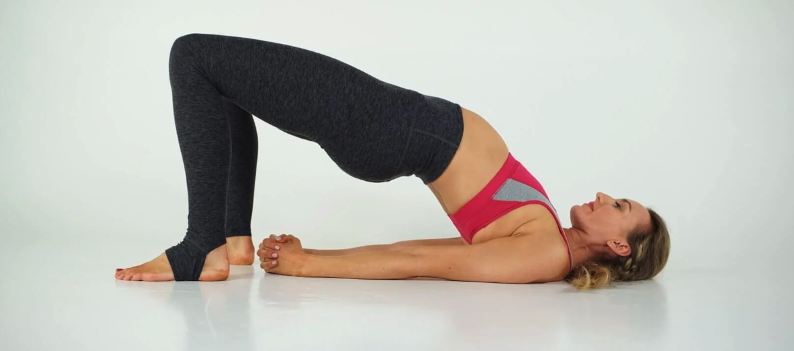
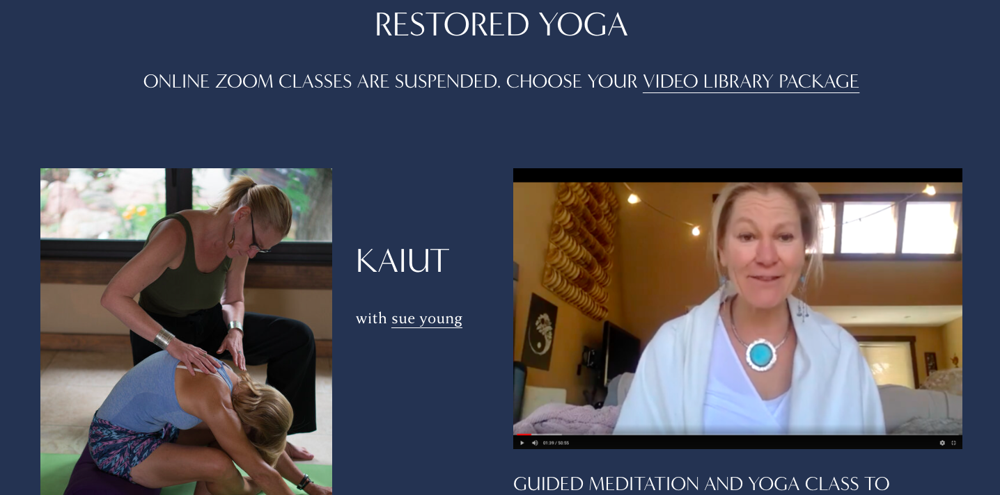

Downward Facing Dog - Adho Mukha Svanasana

This Hatha Yoga Posture is common in Ashtanga practice.
It’s part of the sun salutations sequence, commonly known as Surya Namaskar (Surya means sun).
This pose stretches out the back muscles, and the upper body.
Bridge Pose - Setu Bandhasana

This pose helps to strengthen the glutes, quadriceps, and core.
Bringing the chin towards the chest stimulates the thyroid gland, which is said to aid in regulating hormones.

Restored Yoga